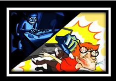
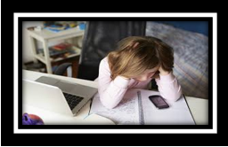
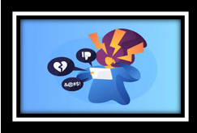
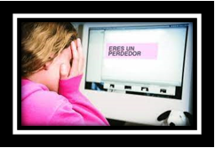

Debido a la omnipresencia de los medios de comunicación tecnológicos y de internet en la vida diaria desde principios del siglo XXI, esta clase de acoso produce a la víctima graves márgenes de estrés, angustia, humillación y demás formas de menor o mayor agravamiento de sufrimiento emocional que pueden llevar de manera muy segura al afectado a dolencias más grandes. Es por esto que el ciberbullying puede ser un delito en algunas legislaciones, casos y países.
CARACTERISTICAS DEL CIBERBULLYING
1.- CIBERSTALKING
Se le llama así a la práctica de averiguar la información digital del acosado con la intención de encontrar datos personales, confidenciales o antiguos que sean de utilidad para agresiones en la actualidad a manera de ridiculización, exposición, etcétera.
2.- ACOSO PSICOLOGICO
Es la práctica de descalificar malintencionadamente de forma constante y pública a una persona al exagerar y exponer sus defectos y sus debilidades o censurando de manera sistemática sus intervenciones y comentarios en plataformas de socialización virtual.
El objetivo de esta práctica es humillar a la otra persona perjudicando su autoestima al exponerlo o agredirlo injustamente frente a otros.
3.- SEXTORSION
Es la extorsión, el chantaje y la intimidación de una persona causada por uno o distintos individuos que de una forma u otra han obtenido material íntimo que pertenece a la víctima; tales como mensajes, videos, fotografías, etcétera.
Casi siempre suele perpetrarse con la ayuda de parejas antiguas que difunden el contenido íntimo a manera de venganza. Puede considerarse también como un tipo de violencia de género porque en casi todos los casos, la víctima de esta característica de ciberbullying es una mujer.
4.- GROOMING O ACOSO PODERASTA
Son diversas conductas que se realizan por un adulto con la intención de obtener la confianza de un menor de edad con el propósito de seducirlo de manera sexual.
Esto puede suceder abiertamente o con el uso de artimañas y disfraces que intentan provocar confusión en el menor, haciéndole creer que se está comunicando con alguien cercano o de su misma edad.
5.- BOMBARDEO COMUNICACIONAL
Son mensajes, llamadas y otras formas de comunicaciones que se realizan de forma abrumadora, insistente y masiva en videojuegos, redes sociales, mensajería, servicios de videollamadas y correo electronico
Estos mensajes tienen la finalidad de torturar, agredir e insultar a la víctima; casi siempre como una dinámica de supuesto castigo o de venganza.
Haciendo uso de cuentas falsas o instrumentos digitales, la mayoría de los acosadores emprenden campañas de caricaturización, difamación o incitan al linchamiento de una persona con la metodología de hacerse pasar por ella divulgando información confidencial como números de teléfono, direcciones y también acusándola de manera falsa para que reciba mensajes o llamadas no solicitadas.
7.- CONSECUENCIAS DEL CIBERBULLYING
Las consecuencias a nivel emocional y psicológico en la víctima pueden ser desgarradoras, llevando a la persona a padecer los cuadros de estrés, ansiedad, baja autoestima, depresión, bajo rendimiento en la escolaridad, perder el apetito, miedo a relacionarse con los demás y hasta realizar intentos de suicidio.
La gran masificación de los medios electrónicos tales como tabletas y celulares inteligentes junto a la gran popularidad de redes sociales como Twitter, WhatsApp, Facebook, snapchat, google, etcétera, ha desencadenado un número creciente de casos con saldos trágicos de ciberbullying en todo el mundo, principalmente en niños y en adolescentes. Por esta razón es de suma importancia prestar atención a los más pequeños y alertarlos sobre los peligros de internet en charlas amenas e informativas.
